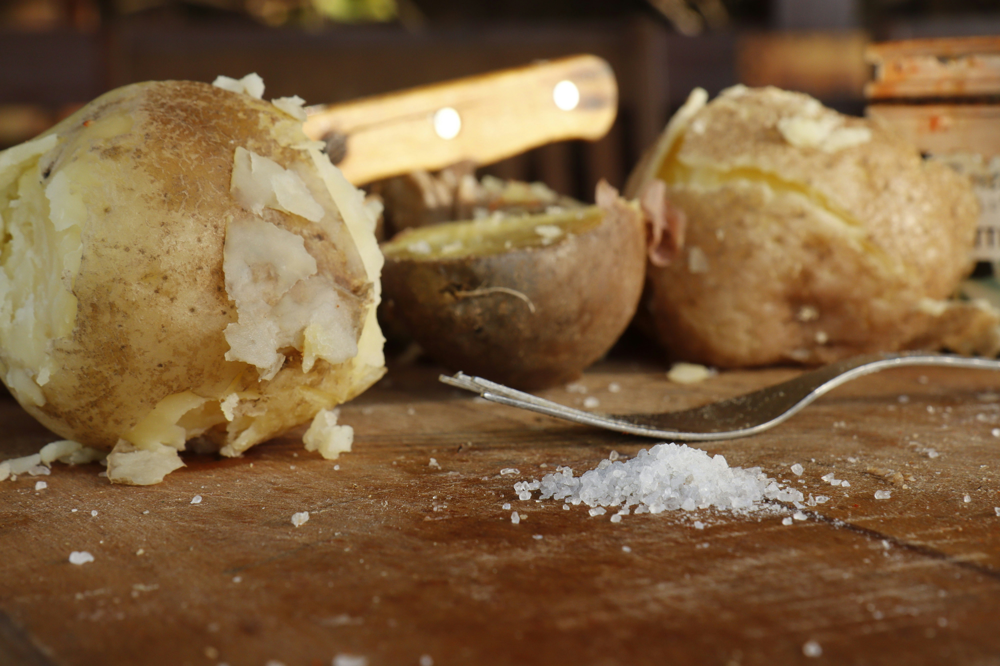

Description
The perfect baked potato can be enjoyed on its own or as a side dish.
Ingredients:
- Russet Potato
- Butter
- Oil + Salt (for the skin)
- Optional Toppings:
- Sour Cream
- Shredded Cheese
- Steamed/Microwaved Brocolli
- Bacon
Instructions
- Preheat oven to 400 F
- While oven preheats prick clean potatoes with a fork, brush/roll/spray oil on outside of potatoes and sprinkle/roll on kosher salt
- Place potatoes directly onto oven rack
- Bake for 40-60+ mins until they reach 200+ degrees F, measured with a food thermometer
- Directly out of the oven cut each potato open long ways from one end to the other and put butter inside
- Use a spoon to carefully mix the butter in with the insides of the potato, keeping the skin intact
- Add optional toppings